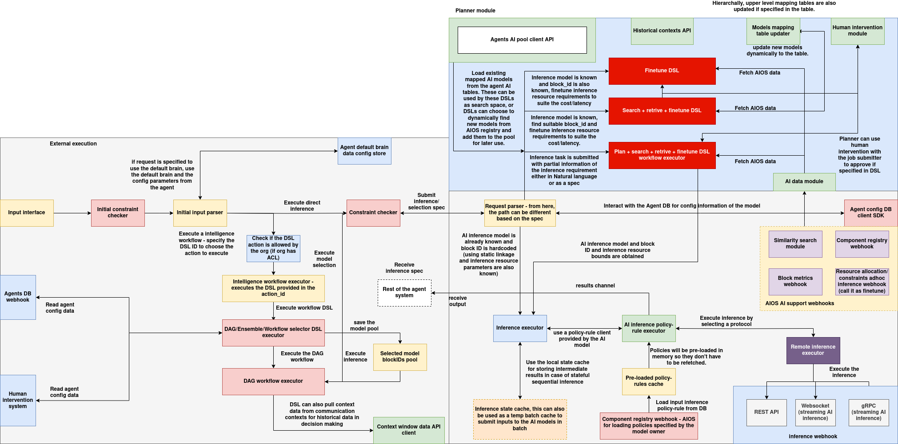

Agent LLM interface
Introduction
This module provides a flexible and extensible framework for managing, querying, and executing LLM (Large Language Model) and optimizer blocks within a distributed AI orchestration environment. The system abstracts over heterogeneous backends (OpenAI, internal gRPC servers, and REST APIs) and provides a unified interface for:
- Registering known or custom models and optimizers
- Performing inference using pluggable strategies
- Interacting with behavioral controllers for task planning
- Generating human-readable prompts with metadata and schema descriptions
- Estimating model capabilities before execution
Key Goals
- Pluggability: Define backends like OpenAI, AIOS, and OrgLLM using a common interface (
LLMInferenceAPI) - Extensibility: Add new models and optimizers dynamically, including custom logic
- Interoperability: Integrate seamlessly with external registries, inference engines, and planning APIs
- Modularity: Clean separation between block metadata management, inference execution, and planner logic
Use Cases
- Deploying a local or distributed LLM registry and running inference tasks through configurable infrastructure
- Performing ranking and optimizer selection via LLM-driven prompting
- Schema-aware task planning, enriched with task metadata and historical descriptions
- Interfacing with a behavior controller or planner that coordinates multiple agents or components in a workflow
This framework is ideal for AI platforms, orchestration systems, or DSL interpreters that need to incorporate LLMs and optimize execution strategies dynamically.
Agent LLM Inference Architecture
The Agent LLM Inference System is a modular AI execution pipeline designed to dynamically discover, plan, and execute LLM (Large Language Model) and optimizer-based tasks across heterogeneous backends. It enables DSL workflows, agents, and behavior controllers to submit requests in natural language or structured formats and routes them through a configurable planning and inference stack. The architecture supports constraint checking, stateful execution, model selection, dynamic prompt construction, and backend-agnostic model execution over REST, WebSocket, and gRPC.


Input Parsing and Execution Dispatch
At the entry point of the system is the input interface that accepts structured task execution requests, either from external clients or internal agent workflows:
- Input Interface: Entry for task payloads from DSL agents or user interfaces. Supports default brain selection and agent-specific config bootstrapping.
- Initial Constraint Checker: Enforces preliminary validation using policy rules or access control logic (e.g., organization-specific ACLs).
- Initial Input Parser: Normalizes input into structured DSL or inference specifications. Supports execution by DSL action ID or direct model selection.
If a DSL workflow is detected, it’s passed to the workflow executor. If the request is a direct inference, it’s routed to the model selection and planner modules.
DSL & Workflow Execution Engine
The system supports dynamic workflows using an embedded DSL executor and associated selectors:
- DSL Action Verifier: Checks whether the action ID is authorized for the current organization.
- Intelligence Workflow Executor: Executes the DSL via either a standalone block or a composed DAG.
- DAG/Workflow Selectors: Parses the DAG or ensemble spec and dispatches it to the appropriate workflow executor.
- Context Window API Client: Pulls historical context for use in prompt enrichment or memory-aware inference.
These components allow the system to support both standalone models and orchestrated multi-step inference chains.
Planner Module & Model Pool Interaction
At the heart of the model selection process is the Planner Module, which includes AI model discovery, ranking, and prompt-based refinement:
- Agents AI Pool Client API: Retrieves model metadata and availability from the internal agent model pool.
- Historical Contexts API: Feeds contextual traces into the planner for refined prompt generation or decision branching.
-
Planner Execution Modes:
-
Finetune DSL: Adjusts model configurations or selects block variants based on task characteristics.
- Search + Retrieve + Finetune: Retrieves matching blocks and dynamically adjusts planning parameters.
- Plan + Search + Retrieve + Execute: Full planning pipeline for complex queries requiring multiple stages of resolution.
Models can be hardcoded, retrieved using tags, or selected through similarity-based semantic matching.
Inference Constraint Pipeline
Before running inference, all requests are validated against execution and policy constraints:
- Constraint Checker: Evaluates the model's execution feasibility and compliance.
- Request Parser: Decides the execution flow depending on whether the spec is known, estimated, or incomplete.
- Inference Specification Receiver: Validated model and block IDs are handed off to the downstream executor.
- Selected Block Pool: Prepared model pool for execution, possibly influenced by prior estimation or rule checks.
This ensures that resource limits, protocol compliance, and model readiness are enforced before invocation.
Inference Execution and Policy Rule System
The actual inference logic is executed using a policy-aware runtime executor:
- Inference Executor: Executes the request based on the selected model and protocol.
- AI Inference Policy Rule Executor: Uses a preloaded policy-rule client to determine input handling, retry rules, or fallback strategies.
- Local State Cache: Maintains batched or streaming inputs, historical output context, and temporal buffers for chained workflows.
- Policy Rules Cache: Ensures low-latency policy enforcement by caching rules from remote registries.
These modules support deterministic and reproducible inference using rules set at the model, org, or request level.
Remote Inference & Webhook Execution
Inference can be routed to external or backend-specific executors via protocol-agnostic interfaces:
- REST API: Standard POST-based request/response execution.
- WebSocket Executor: Enables real-time streaming inference and multi-turn conversations.
- gRPC Executor: High-performance protocol for AIOS/OrgLLM deployments with
RunInferenceRequest.
Each backend conforms to the LLMInferenceAPI and can be dynamically plugged in via the KnownLLMs registry.
AI Data and Webhook Support Layer
A set of AIOS-native webhooks support runtime operations like similarity search, constraint updates, and resource usage estimation:
- Similarity Search Module: Used by planners to match models to task descriptions using embedding or tag-based policies.
- Component Registry Webhook: Loads dynamic blocks and optimizers.
- Block Metrics Webhook: Updates usage statistics, latency logs, and success rates.
- Resource Allocation Webhook: Enforces runtime limits or routes inference to compliant infrastructure nodes.
These hooks provide dynamic feedback and model reconfiguration capabilities in real-time.
Human Intervention & Agent Configuration APIs
In cases requiring manual oversight or approval:
- Human Intervention Module: Provides pause-and-continue control during planning or inference if specified by the DSL.
- Agents DB Webhook: Reads model settings, behavioral policies, or default configurations from the agent’s persistent config database.
- Agent Default Brain Config: Allows default model, prompt template, and rule loading at startup or fallback.
These features ensure that inference is safe, supervised, and in line with organizational policies when required.
End-to-End Flow Summary
- Input is parsed and validated.
- DSL or direct inference is chosen based on input.
- If DSL, the workflow executor runs; if direct inference, the planner selects the model.
- Constraint and policy rules are enforced.
- Inference is executed via REST/WebSocket/gRPC.
- Results are optionally cached, logged, or streamed back.
- Human intervention or planner interaction is applied as per DSL or org rules.
Modules Overview
This section provides a high-level breakdown of the primary modules and classes within the system, outlining their roles and interconnections. The system is modular by design, enabling decoupled interaction between model registries, inference backends, planning utilities, and external APIs.
| Module | Description |
|---|---|
Block & Metadata |
Core data models used to represent LLMs, optimizers, and their associated metadata (tags, descriptions, protocols, etc.). |
KnownLLMs |
Manages a registry of known or custom LLM blocks. Provides methods for adding, removing, querying, and running inference. |
KnownLLMOptimizers |
Similar to KnownLLMs, but manages optimization blocks that can be dynamically selected for LLM task enhancement. |
LLMSelectorPlanner |
Builds textual prompts from available LLM metadata and task descriptions. Used for planner interactions with behavioral controllers. |
OptimizerSelector |
Constructs prompts to select optimizers based on task requirements and available optimizer metadata. |
BlocksQueryManager |
Provides REST API-based interaction with an external block registry. Supports block fetching, filtering, and similarity search. |
OrgLLMsManager |
Handles model registration, unregistration, and lookup in an organizational registry using RESTful endpoints. |
LLMInferenceAPI (abstract) |
Defines a standard interface for all LLM inference backends. Ensures consistent access to run_inference, check_execute, and get_current_estimates. |
OpenAIInferenceAPI |
Concrete implementation of LLMInferenceAPI using the OpenAI Chat API. |
AIOSInferenceAPI |
gRPC-based inference backend used for interacting with AIOS-deployed models via BlockInferenceService. |
OrgLLMInferenceAPI |
gRPC-based inference for organizational models, with a focus on RunInferenceRequest. |
AIOSEstimatorClient |
Provides HTTP-based estimation and execution validation via /discovery/estimate and /discovery/check_execute. Supports pre-evaluation before actual model execution. |
Importing
The LLM inference subsystem can be imported using
from agents_sdk.llm import *
Certainly. Here's the cleaned and formal version of the documentation section:
Registering and Running Inference on LLM Models
The KnownLLMs class provides a central interface for managing and executing registered LLM blocks. These blocks may be retrieved from a remote registry or defined locally with custom inference logic. The class exposes methods to register models, remove them, query metadata, and execute inference in a backend-agnostic manner.
Initialization
from agents_sdk.llm import KnownLLMs
llm_manager = KnownLLMs(
base_url="http://registry.local",
adhoc_inference_url="http://inference.local"
)
| Parameter | Type | Description |
|---|---|---|
base_url |
str | URL of the external block registry to query LLM metadata and listings |
adhoc_inference_url |
str | URL of the inference backend for executing registry-based LLMs |
Registering a Remote Model by ID
Registers a block retrieved from the external registry using its block ID.
llm_manager.add_llm(name="my-llm", block_id="llm-block-123")
Registering a Custom LLM
Custom blocks can be manually defined and registered using add_custom_llm.
custom_block_data = {
"id": "custom-llm-block",
"blockMetadata": {
"description": "Custom summarization model",
"tags": ["summary", "text"]
},
"inputProtocols": ["text/plain"],
"outputProtocols": ["text/plain"]
}
llm_manager.add_custom_llm("my-llm", block_data=custom_block_data)
Alternatively, use create_custom_llm_block to register a block and attach a custom inference implementation:
from agents_sdk.llm_inference import OpenAIInferenceAPI
openai_backend = OpenAIInferenceAPI(api_key="sk-...", model="gpt-4")
llm_manager.create_custom_llm_block(
id="openai-wrapper",
description="OpenAI GPT-4 wrapper",
tags=["openai", "chat"],
input_protocols=["text/plain"],
output_protocols=["text/plain"],
block_inference_object=openai_backend
)
Listing and Removing Registered LLMs
# List all registered LLMs
for name, block in llm_manager.list_llms().items():
print(name, block.to_dict())
# Remove an LLM from the registry
llm_manager.remove_llm("my-llm")
Querying Registry Blocks
Fetch and filter blocks based on metadata (e.g., tags or input protocols):
query = {"tags": ["qa"], "inputProtocols": ["text/plain"]}
results = llm_manager.query_blocks(query)
for block in results:
print(block.id, block.blockMetadata.description)
Running Inference
Use run_ai_inference to perform inference on a registered LLM.
response = llm_manager.run_ai_inference(
name="openai-wrapper",
input_data={
"prompts": [
{"role": "user", "content": "What is quantum computing?"}
]
},
session_id="session-xyz",
frame_ptr=b""
)
print(response)
If a custom inference backend (custom_block_inference) is attached, it will be used. Otherwise, the system uses AIOSInferenceAPI to call the ad-hoc inference service.
Estimating Execution Feasibility
Use estimate to check model feasibility or pre-execution resource requirements.
result = llm_manager.estimate(
name="openai-wrapper",
session_id="session-xyz",
query={"input_size": 2048}
)
print(result)
This functionality is supported for backends that integrate estimation APIs, such as AIOS.
Retrieving Searchable Metadata
To retrieve metadata suitable for search or display:
searchable_data = llm_manager.get_searchable_representation()
for item in searchable_data:
print(item["id"], item["description"], item["tags"])
This representation includes the model ID, description, tags, input protocols, and output protocols.
Certainly. Below is the official documentation for the Block Query Manager, including usage of filter-based and similarity-based model discovery, followed by integration with the KnownLLMs registry.
Discovering Models Using Block Query Manager
The BlocksQueryManager class is responsible for querying model blocks from an external registry or discovery service. It supports two primary discovery mechanisms:
- Filter-based querying: Finds blocks that meet specific field-level constraints (e.g., tags, input protocols).
- Similarity-based searching: Uses a ranking policy to return the most relevant models based on dynamic task descriptions and a configured similarity policy.
Discovered models can be programmatically added to the KnownLLMs registry for execution and orchestration.
Initialization
from agents_sdk.llm import BlocksQueryManager
query_manager = BlocksQueryManager(base_url="http://registry.local")
| Parameter | Type | Description |
|---|---|---|
base_url |
str | Base URL of the block registry or discovery API |
Query Types
1. Filter-Based Query
This query returns models that match specified static attributes such as tags, protocols, or block type.
Example
conditions = [
{"variable": "tags", "operator": "IN", "value": ["qa"]},
{"variable": "inputProtocols", "operator": "==", "value": "text/plain"}
]
blocks = query_manager.filter_data(conditions)
for block in blocks:
print(block.id, block.blockMetadata.description)
The conditions follow a logical structure and are internally passed to a
clusterQueryfilter withANDlogic.
2. Similarity-Based Search (with Ranking Policy)
This query supports similarity search based on a text description of the task, using a ranking policy configured on the server.
Example
conditions = [
{"variable": "task_description", "operator": "LIKE", "value": "summarize research paper"}
]
policy_code_path = "policies/similarity_policy.zip"
blocks = query_manager.similarity_search(
conditions=conditions,
policy_code_path=policy_code_path
)
for block in blocks:
print(block.id, block.blockMetadata.description)
Payload Internals (for reference)
Filter Payload Structure
{
"body": {
"values": {
"matchType": "cluster",
"filter": {
"clusterQuery": {
"logicalOperator": "AND",
"conditions": [...]
}
}
}
}
}
Similarity Search Payload Structure
{
"body": {
"values": {
"matchType": "cluster",
"rankingPolicyRule": {
"values": {
"executionMode": "code",
"policyCodePath": "...",
"settings": {
"maxResults": 10,
"enableCaching": true
},
"parameters": {
"filterRule": { ... },
"return": 5
}
}
}
}
}
}
Integrating Discovered Models with KnownLLMs
Once blocks are retrieved using filter or similarity queries, they can be registered into the KnownLLMs registry dynamically.
Example
from agents_sdk.llm import KnownLLMs
# Initialize managers
llm_registry = KnownLLMs(
base_url="http://registry.local",
adhoc_inference_url="http://inference.local"
)
query_manager = BlocksQueryManager(base_url="http://registry.local")
# Discover models with a filter query
conditions = [{"variable": "tags", "operator": "IN", "value": ["summarization"]}]
discovered_blocks = query_manager.filter_data(conditions)
# Register the discovered blocks
for block in discovered_blocks:
llm_registry.add_custom_llm(name=block.id, block_data=block.to_dict())
# Run inference using the discovered model
response = llm_registry.run_ai_inference(
name=discovered_blocks[0].id,
input_data={"prompts": [{"role": "user", "content": "Summarize the following paragraph..."}]},
session_id="session-123",
frame_ptr=b""
)
print(response)
This workflow allows dynamic discovery, registration, and usage of LLM models without predefining them in code.
Creating and Registering a Custom LLM Model
To support custom backends, the system provides an abstract interface called LLMInferenceAPI. Any custom model implementation must subclass this interface and implement its methods. Once defined, the custom logic can be wrapped in a Block object and registered with KnownLLMs for inference.
Step 1: Understanding the LLMInferenceAPI Interface
All backend implementations must inherit from LLMInferenceAPI and implement the following methods:
from abc import ABC, abstractmethod
from typing import Dict
class LLMInferenceAPI(ABC):
@abstractmethod
def run_inference(self, input_data: Dict) -> str:
"""
Execute inference on the model using input data.
Returns a string result.
"""
pass
@abstractmethod
def check_execute(self, query: dict):
"""
Perform a lightweight execution check (e.g., validation or preview).
Returns a tuple (success: bool, data: Any).
"""
pass
@abstractmethod
def get_current_estimates(self):
"""
Optionally return resource or usage estimates before full execution.
Returns a tuple (success: bool, data: Any).
"""
pass
This interface standardizes how models are accessed, ensuring full compatibility with KnownLLMs.
Step 2: Implementing a Custom LLM Backend
Here's an example of a simple custom model that returns a reversed input string.
from agents_sdk.llm_inference import LLMInferenceAPI
from typing import Dict
class ReverseTextLLM(LLMInferenceAPI):
def run_inference(self, input_data: Dict) -> str:
text = input_data.get("text", "")
return text[::-1] # Reverse the input text
def check_execute(self, query: dict):
return True, {"status": "Ready"}
def get_current_estimates(self):
return True, {"estimated_latency": "1ms"}
Step 3: Creating and Registering the Block
Use the create_custom_llm_block() method from KnownLLMs to wrap your custom implementation in a Block:
from agents_sdk.llm import KnownLLMs
from agents_sdk.llm_inference import ReverseTextLLM
# Initialize KnownLLMs
llm_manager = KnownLLMs(
base_url="http://registry.local",
adhoc_inference_url="http://inference.local"
)
# Create the custom block
custom_backend = ReverseTextLLM()
llm_manager.create_custom_llm_block(
id="reverse-llm",
description="Reverses the input text",
tags=["test", "reverse"],
input_protocols=["text/plain"],
output_protocols=["text/plain"],
block_inference_object=custom_backend
)
This registers the model internally as reverse-llm and attaches the custom inference logic.
Step 4: Running Inference on the Custom Model
result = llm_manager.run_ai_inference(
name="reverse-llm",
input_data={"text": "hello world"},
session_id="session-001",
frame_ptr=b""
)
print(result) # Output: "dlrow olleh"
The KnownLLMs registry automatically routes the inference to the ReverseTextLLM implementation based on its registration.